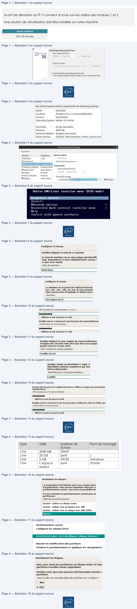
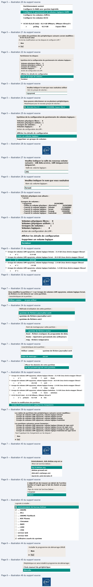

Transcription du document du Drive TSSR. La mise en forme est adaptée au Web ; les compléments IA du portail sont présentés séparément.
Administration Debian GNU/Linux
TP du Module 02 – Installation d’une distribution Debian
Avant de démarrer ce TP, il convient d’avoir suivi les vidéos des modules 1 et 2
Une solution de virtualisation doit être installée sur votre machine
Durée estimée
30 à 45 minutes
I.
Récupérer l’image source d’installation
Copier localement le fichier debian-11.x.x-adm64-netinst.iso depuis le serveur de l’ENI.
(avec 11.x.x = la version disponible sur le serveur)
II.
Création de la machine virtuelle
Créer une nouvelle machine virtuelle avec les paramètres suivant :
Installer le système plus tard
- Interface réseau permettant l'accès au réseau internet (Bridged)
- Disque dur de 40 Go de taille dynamique
Page 1/8
© ENI – Tous droits réservés
Install operating system from:
WORKSTATION
Use à physical drive:
Use ISO image:
©1 will install the operating system later,
|
The virtual machine will be created with a blank hard disk.
Eni
Administration Debian GNU/Linux
- 4096 Mo de mémoire vive
HDD 40 + 4096M de RAM + interface réseau bridge
- Démarrer la machine virtuelle en mappant le fichier ISO comme CDROM.
Sélectionner l'iso d'installation Debian
III.
Installation de Debian
1) Choisir les options suivantes :
- Installer Debian en mode graphique
- Choix de la langue : French - Français
- Emplacement géographique : France
- Clavier : France
- Nom de la machine : définir un nom
- Nom de domaine : ad.campus-eni.fr
- Utilisateurs :
•
Indiquer un mot de passe pour le compte root
•
Créer un utilisateur à votre noml
Installation en mode graphique
Page 2/8
© ENI – Tous droits réservés
The virtual machine will be created with the Following settings:
Name:
DebClient
Location:
/home;'
/vmware/DebClient
Version:
Workstation
Operating System: Debian 10.x 64-bit
Hard Disk:
40 GB, Monolithic
Memory:
4096 MB
Network Adapter:
Bridged (Automatic)
Other Devices:
CD/DVD, USB Controller, Printer, Sound Card
Hardware
Device
Summary
Device Status
Memory
4 CB
@Processors
1
Connect
at power on
= Network Adapter
Bridged (Aute Connection
“Sound Card
Auto detect
\sea piysicalcrve
Printer
Present
& USB Controle:
Present
Use ISO image
Display
Auto detect
oct
Ste
Debian GNU-Linux
installer menu
(BIOS mode)
Install
Advanced options
>
Accessible dark contrast
installer menu
>
Help
Install with speech synthesis
Administration Debian GNU/Linux
Nommer la machine
Préciser le nom de domaine
Saisie du mot de passe root
Saisie du nom complet du nouvel utilisateur
Saisie du login
Puis le mot de passe de l'utilisateur
Page 3/8
© ENI – Tous droits réservés
Configurer le réseau
Veuillez indiquer le nom de ce système.
Le nom de machine est un mot unique qui identifie
nom, demandez-le à votre administrateur réseau.
!
ce que vous voulez.
Nom de machine :
DebClient|
Configurer le réseau
Le domaine est la partie de l'adresse Internet
Par .com, .net, .edu, ou .org. Si vous paramét
mais assurez-vous d'employer le même nom st
Domaine :
ad.kampus-eni.fr
Mot de passe du superutilisateur (« root ») :
eocccccce
( Afficher le mot de passe en clair
Veuillez entrer à nouveau le mot de passe du superutilisateur
Confirmation du mot de passe :
L111111113
( Afficher le mot de passe en clair
Veuillez indiquer le nom complet du nouvel utilisateur.
d'origine des courriels émis ainsi que dans tout progra
propre nom est un bon choix.
Nom complet du nouvel utilisateur:
Camille Garcial
Veuillez choisir un identifiant (« login »)
identifiants doivent commencer par une
lettres minuscules.
Identifiant pour le compte utilisateur :
camille
Un bon mot de passe est composé de lettres, chiffres et signes de ponctuation.
régulièrement.
Mot de passe pour le nouvel utilisateur :
QU
[] Afficher le mot de passe en clair
Veuillez entrer à nouveau le mot de passe pour l'utilisateur, afin de vérifier que
Confirmation du mot de passe :
00000000
(CD Afficher le mot de passe en clair
Administration Debian GNU/Linux
Point de montage
2) Partitionnement des disques :
- Méthode de partitionnement : choisir Manuel
- Sélectionner le disque détecté puis « continuer »
- Configurer le gestionnaire de volume logique LVM
- Créer un groupe de volumes puis les volumes logiques indiqués ci-dessous :
Type
Taille
Système de
fichiers
ext4
/home
LVM
2048 MB
SWAP
LVM
20 GB
ext4
/
LVM
5 GB
FAT32
/windows
LVM
L’espace
restant
Mode manuel
Sélection du disque
Valider le partionnement du disque
Page 4/8
© ENI – Tous droits réservés
Partitionner les disques
Le programme d'installation peut vous assister pour
d'organisation). Vous pouvez également effectuer ce
partitionnement assisté, vous aurez la possibilité de
Si vous choisissez le partitionnement assisté pour ur
partitionner.
Méthode de partitionnement :
Assisté - utiliser un disque entier
Assisté - utiliser tout un disque avec LVM
Assisté - utiliser tout un disque avec LVM chiffré
Partitionnement assisté
Configurer les volumes iSCSI
SCSI3 (0,0,0) (sda) - 42.9 GB VMware, VMware Virtual S
Annuler les modifications des partitions
Terminer le partitionnement et appliquer les changements
Partitionner les disques
Vous avez choisi de partitionner un disque entier. Si vous
partitions actuelles seront supprimées.
Veuillez noter que vous pourrez ultérieurement annuler c
partitions.
Faut-il créer une nouvelle table des partitions sur ce disque ?
©
Non
| Type | Taille | Système de fichiers | Point de montage |
| LVM | 2048 MB | SWAP | |
| LVM | 20 GB | ext4 | / |
| LVM | 5 GB | FAT32 | /windows |
| LVM | L’espace restant | ext4 | /home |

Administration Debian GNU/Linux
Se rendre dans le gestionnaire LVM
Valider les modifications
Commencer par créer un Groupe de Volumes
Donner un nom explicite au Groupe de Volumes
Sélectionner le disque à utiliser
Créer ensuite un volume logique
Page 5/8
© ENI – Tous droits réservés
Partitionnement assisté
Configurer le RAID avec gestion logicielle
Configurer le gestionnaire de volumes logiques (LVM)
Configurer les volumes chiffrés
Configurer les volumes iSCSI
Vv SCSI3 (0,0,0) (sda) - 42.9 GB VMware, VMware Virtual S
>
priflog
42.9GB
Espace libre
Les tables de partitions des périphériques suivants seront modifiées :
SCSI3 (0,0,0) (sda)
Ecrire les modifications sur les disques et configurer LVM ?
© Non
Partitionner les disques
Synthèse de la configuration du gestionnaire de volumes logiques :
Volumes physiques libres:
0
Volumes physiques utilisés : 0
Groupes de volumes :
0
Volumes logiques :
0
Action de configuration de LVM :
Afficher les détails de configuration
Terminer
Veuillez indiquer le nom que vous souhaitez utiliser
Nom du groupe de volumes :
vgsystem|
Vous pouvez sélectionner un ou plusieurs périphériques.
Périphériques pour le nouveau groupe de volumes :
/dev/sda free #1
(42949MB; Espace libre)
Synthèse de la configuration du gestionnaire de volumes logiques :
Volumes physiques libres:
0
Volumes physiques utilisés : 1
Groupes de volumes :
1
Volumes logiques :
0
Action de configuration de LVM :
Afficher les détails de configuration
Créer un volume logique
Supprimer un groupe de volumes
Administration Debian GNU/Linux
→
Saisir nom et taille du volume
Répéter les étapes de creation des volumes en respectant les tailles demandées.
Terminer par la partition home de manière à lui affecter l’espace restant.
"Afficher les détails de configuration” pour vérifier.
Terminer la mise en place des Volumes
Définir les points de montage et systèmes de fichiers.
Sélectionner le volume lvroot
Page 6/8
© ENI – Tous droits réservés
Veuillez indiquer la taille du nouveau volume
suivants : 10K (kilo-octets), 10M (mégaoctets)
Veuillez indiquer le nom que vous souhaitez
mégaoctet.
Nom du volume logique :
Taille du volume logique:
Ivroot|
20G
Volumes physiques non alloués :
* aucun
Groupes de volumes :
* vgsystem
(42945MB)
- Utilise le volume physique : /dev/sdal
(42945MB)
- Fournit le volume logique : lvhome
(15900MB)
- Fournit le volume logique : Ivroot
(19998MB)
- Fournit le volume logique : lvswap
(2046MB)
- Fournit le volume logique : lvwindow
(4999MB)
Volumes physiques libres:
0
Volumes physiques utilisés : 1
Groupes de volumes :
1
Volumes logiques :
4
Action de configuration de LVM :
Afficher les détails de configuration
Supprimer un volume logique
Y Groupe de volumes LVM vgsystem, volume logique lvhome - 15.9 GB Linux device-mapper (linear)
>
n°1
15.9 GB
Y Groupe de volumes LVM vgsystem, volume logique lvroot - 20.0 GB Linux device-mapper (linear)
Y Groupe de volumes LVM vgsystem, volume logique lvswap - 2.0 GB Linux device-mapper (linear)
>
n°1
2.0 GB
T Groupe de volumes LVM vgsystem, volume logique lvwindow- 5.0 GB Linux device-mapper (linear)
>
n°1
5.0 GB
Administration Debian GNU/Linux
Sélectionner "Utiliser comme"
Choisir le type ext4
→
Définir le point de montage comme “/système de fichiers racine”
Terminer le paramètrage de ce volume
Répéter ces étapes pour les autres volumes logiques en respectant les indications .
NB : la partition Swap n’a pas de point de montage.
Terminer la définition des partitions et volumes
Appliquer les modifications après avoir vérifier les informations
Page 7/8
© ENI – Tous droits réservés
Vous modifiez la partition n° 1 sur Groupe de volumes LVM vgsystem, volume logique lvroot.
de fichiers n'a été détecté sur cette partition.
Caractéristiques de la partition :
Utiliser comme:
ne pas utiliser
Méthode d'utilisation de cette partition :
système de fichiers journalisé ext4
système de fichiers journalisé ext3
système de fichiers ext2
Point de montage pour cette partition :
le:
Sri
il
I
itic
i
>
.
.
eae
EEREEN
1- système de fichiers racine
Utiliser comme :
système de fichiers journalisé ext4
/boot - fichiers statiques du programme de dém:
/home - répertoires personnels des utilisateurs
Point de montage :
aucun
/tmp - fichiers temporaires
Effacer les données de cette partition
Fin du paramétrage de cette partition
Y Groupe de volumes LVM vgsystem, volume logique lvhome - 15.9 GB Linux device-mapper (linear)
>
n°1
15.9 GB
f
ext4
/home
T7 Groupe de volumes LVM vgsystem, volume logique lvroot - 20.0 GB Linux device-mapper (linear)
>
n°1
20.0 GB
f
ext4
!
Y Groupe de volumes LVM vgsystem, volume logique lvswap - 2.0 GB Linux device-mapper (linear)
>
n°1
2.0 GB
f
swap
swap
Y Groupe de volumes LVM vgsystem, volume logique lvwindow - 5.0 GB Linux device-mapper (linear)
>
n°1
5.0 GB
f
fat32
Iwindows
Y SCSI3 (0,0,0) (sda) - 42.9 GB VMware, VMware Virtual S
>
n°1
primaire
42.9GB
K
lm
Annuler les modifications des partitions
Terminer le partitionnement et appliquer les changements
Les tables de partitions des périphériques suivants seront modifiées :
Groupe de volumes LVM vgsystem, volume logique lvhome
Groupe de volumes LVM vgsystem, volume logique lvroot
Groupe de volumes LVM vgsystem, volume logique lvswap
Groupe de volumes LVM vgsystem, volume logique lvwindow
Les partitions suivantes seront formatées :
Groupe de volumes LVM vgsystem, volume logique lvhome de type ext4
Groupe de volumes LVM vgsystem, volume logique lvroot de type ext4
Groupe de volumes LVM vgsystem, volume logique lvswap de type swap
Groupe de volumes LVM vgsystem, volume logique lvwindow de type fat32
Faut-il appliquer les changements sur les disques ?
© Non
Administration Debian GNU/Linux
3) Configurer l'outil de gestion des paquets :
- Analyser un autre CD ou DVD : Non
- Pays du miroir de l’archive Debian : France
- Miroir de l’archive Debian : ftp.fr.debian.org
- Ne pas utiliser de mandataire (proxy)
- Popularity contest : Non
→
Attention à bien choisir le dépot ftp.fr.debian.org
4) Choisir et installer des logiciels :
- Logiciels à installer : sélectionner
•
environnement de bureau Debian
•
utilitaires usuels du système
La sélection des tâches logicielles à installer
5) Installer le programme de démarrage GRUB :
- Installer le programme : Oui
- Périphérique où sera installé le programme : /dev/sda
→
Terminer l'installation
Redémarrer
Page 8/8
© ENI – Tous droits réservés
EEE
eee
Généralement, deb.debian.org est ur
Gardezà l'esprit quelle falt dechoisir unpays
"oi de l'archive Debian
Pays du miroir de l'archive Debian :
debian. proxad.net
rintange
rence Dette
murol.dc.univ-lorraine.fr
Logiciels à installer :
.… GNOME
[]
... Xfce
[]
... GNOME Flashback
C]
... KDE Plasma
[]
... Cinnamon
[]
... MATE
[1
... LXDE
(0 serveur web
[] serveur SSH
utilitaires usuels du système
Installer le programme de démarrage GRUB .
Périphérique où sera installé le programme de démarrage :
© Non
Choix manuel du périphérique
